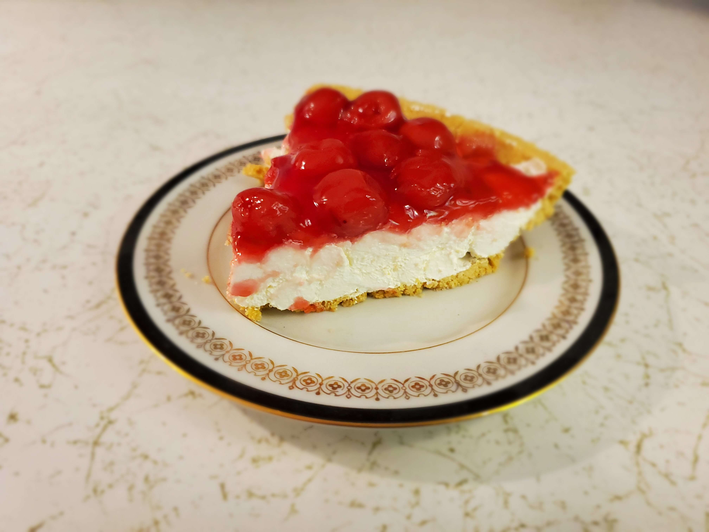

This is a recipe for "Gary's Bachelor Pie"
Ingredients
- One 10 oz. bag of Kraft Jet-Puffed miniature marshmallows.
- Two cups of Original Cool Whip.
- Two Keebler Ready Crust, Graham Pie Crust, Net WT 6 oz.
- One 21 oz. can of Lucky Leaf Premium Cherry Fruit Filling & Topping.
Directions
- Mix the marshmallows and Cool Whip in a large bowl.
- Pile this into the 2 pie crusts, and smooth out.
- Refrigerate for 30 minutes.
- Add half of the fruit filling & topping to each pie crust.
- Put back into the refrigerator until ready to serve.
- Enjoy.
Download Recipe